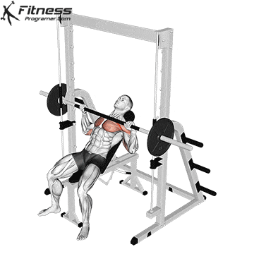
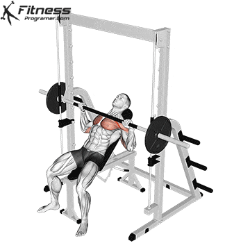

Barbell / Smith-Machine Bench Press (1)
Novice
 

1
Lie flat on a bench with feet planted on the ground. Grip the bar slightly wider than shoulder-width.
2
Unrack the bar and slowly lower it to your chest, keeping your elbows at a 45-degree angle.
3
Press the bar back up explosively, fully extending your arms. Keep your core engaged. Repeat for reps.